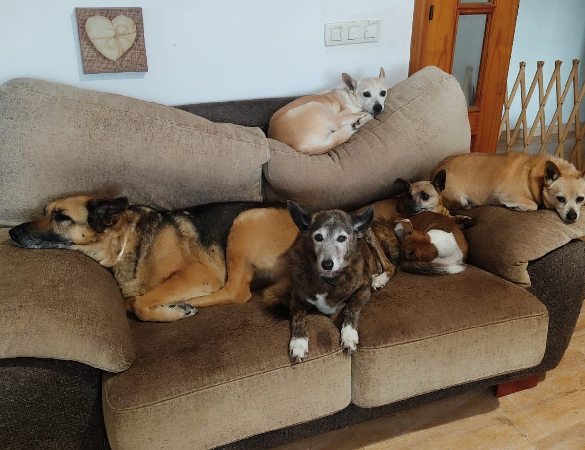
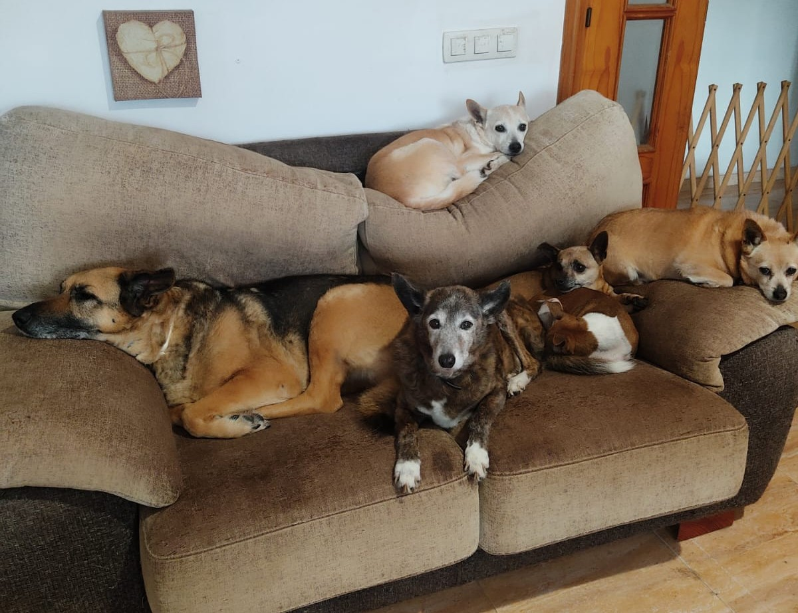

Rescate
Acogemos animales en situaciones de abandono, enfermedad o vulnerabilidad, incluso cuando son casos especialmente difíciles.
Rescatamos a los animales que nadie más acoge. Muchos de ellos viven con nosotras de por vida. No hay jaulas: viven dentro de casa, formando parte de una familia y recibiendo los cuidados y la estabilidad que nunca tuvieron.
Somos una asociación protectora en Castellón que también funciona como santuario. Desde hace más de diez años rescatamos animales abandonados, enfermos, mayores o con secuelas físicas y emocionales. Muchos de ellos no tienen posibilidad de adopción.
Por eso, no los descartamos. Se quedan con nosotras de por vida. Viven dentro de casa, con nosotras, formando parte de una familia y recuperando poco a poco la seguridad que les fue arrebatada.
Somos el lugar al que llegan los animales que nadie más quiere.

Rescatamos, cuidamos y acompañamos a animales que han sufrido abandono, enfermedad o situaciones extremas. Nuestro trabajo no termina cuando llegan: empieza ahí.

Nuestra labor no consiste solo en rescatar. También implica sostener vidas que requieren medicación, paciencia, seguimiento veterinario, estabilidad emocional y un hogar seguro durante años o toda una vida.
Acogemos animales en situaciones de abandono, enfermedad o vulnerabilidad, incluso cuando son casos especialmente difíciles.
Les damos atención veterinaria, cuidados diarios, paciencia y acompañamiento para que puedan recuperarse física y emocionalmente.
Muchos no pueden ser adoptados. Aquí encuentran un hogar definitivo, dentro de casa, con seguridad, dignidad y cuidados de por vida.
La ayuda es lo que nos permite seguir adelante. Sin ella, no sería posible sostener todas estas vidas.
Puedes hacer una donación puntual para ayudarnos con alimentación, tratamientos veterinarios y rescates.
Donar ahoraCon una aportación económica periódica nos ayudas a mantener estabilidad y poder planificar.
Quiero hacerme socioPuedes ayudar directamente a un animal concreto, cubriendo parte de sus gastos y acompañando su historia con nosotras. Al hacer la aportación, indica en PayPal el nombre del animal al que quieres apadrinar.
Quiero apadrinarÚnete a nuestro grupo de Teaming y ayúdanos con solo 1€ al mes.
Ir a TeamingNecesitamos pienso, medicación, mantas, productos de limpieza y otros materiales para el cuidado diario de los animales.
Si quieres hacer una donación de productos, escríbenos a: adoptacastellon@gmail.com
Seguirnos, compartir publicaciones y dar visibilidad a los casos también salva vidas.
Ver redesCada uno de ellos tiene una historia. Puedes conocer a los animales en adopción y a quienes viven con nosotras en el santuario a través de nuestra galería.
Aquí puedes conocer mejor a los animales, sus historias y parte de su recorrido con nosotras.
En la galería encontrarás tanto animales en adopción como residentes permanentes del santuario: los casos invisibles, los mayores, los enfermos y quienes por fin han encontrado seguridad con nosotras.
Seguirnos, compartir sus historias y difundir nuestros casos también salva vidas. Las redes nos ayudan a encontrar apoyo, mover rescates y hacer que más personas conozcan su realidad.
Si quieres ayudarnos, colaborar, donar productos o saber más sobre nuestra labor, puedes escribirnos a adoptacastellon@gmail.com o contactar con nosotras a través de nuestras redes sociales.